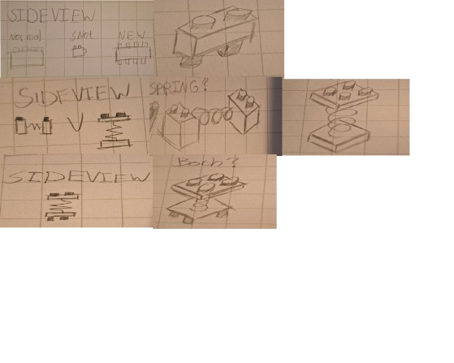
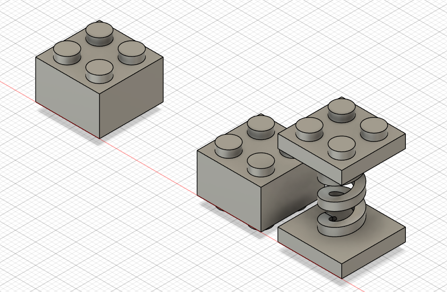
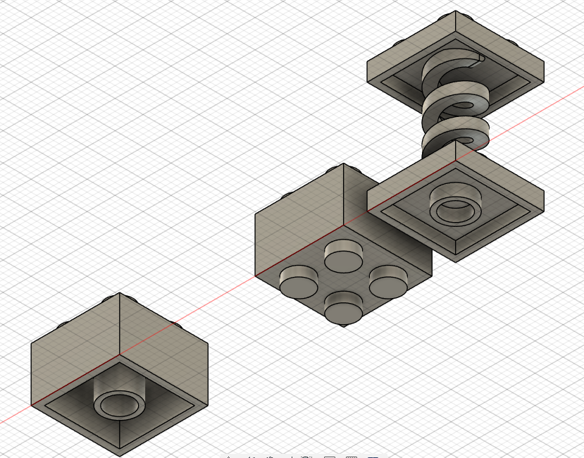
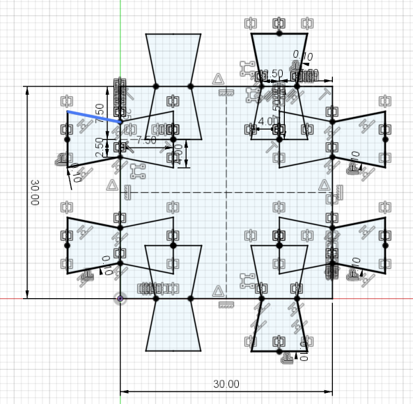
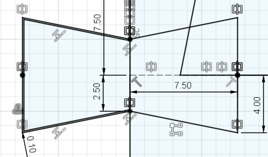
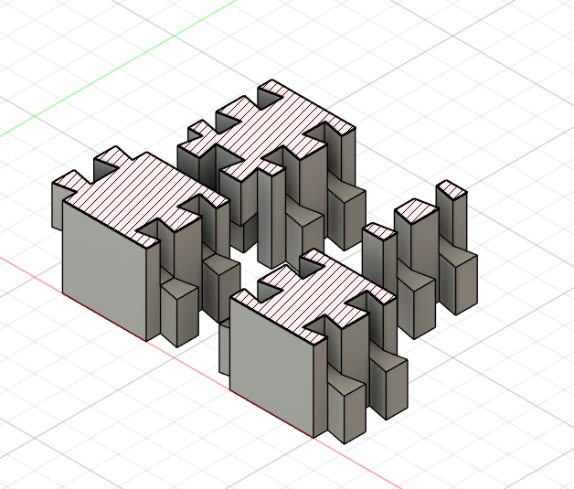
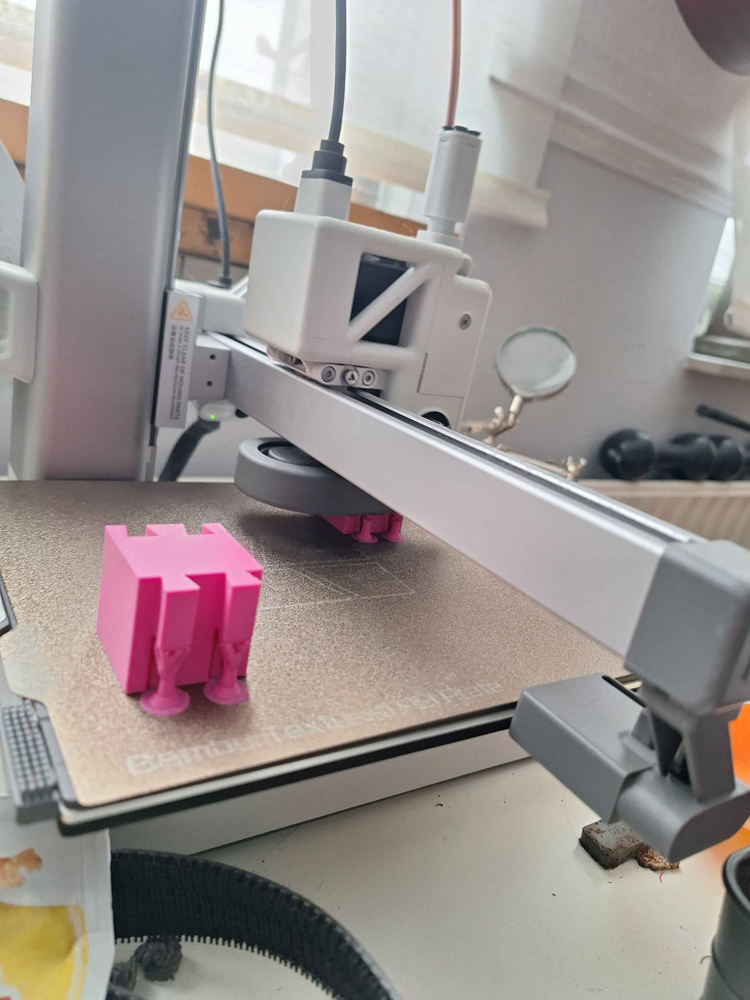
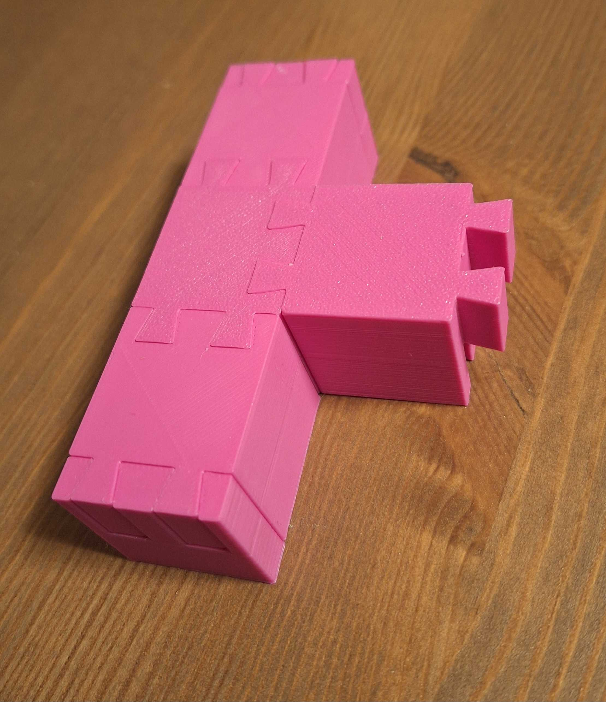

Lego has the inherent benefit of being associated with playfulness by being a toy. However
the creative freedom, accesibility and ease of use make it a great fit iteration of protoypes.
In other words, lego is a great tinkering material.
For people unfamiliar with modern lego building techniques, there are certain blocks called 'SNOT' blocks nowadays. This acronym
stands for Studs Not On Top. The current SNOT bricks that lego makes, have additional studs on the side(s). There is currently
no lego brick that has studs on the top and bottom, though there are plenty of building techniques to reverse the stud direction
by using a number of other bricks. My first concept, was to make a block that can do this by itsself.
For my second concept, I was reminded of making suspension for lego vehicles. The current lego springs are based around lego technic
rather than the basic lego connections. So, why not create a brick that does exactly that? Or even a brick that combines both concepts?



Seen here is the all purpose sketch for the different blocks.
These are all the possible positions
for the dovetails for the moment.
Based on the block, different combinations of the dovetails will be used.


Currently, there are four blocks. A basic block, a T-piece block, an end-cap and a block that inverts the direction of the dovetails.

Pretty in pink, right?

